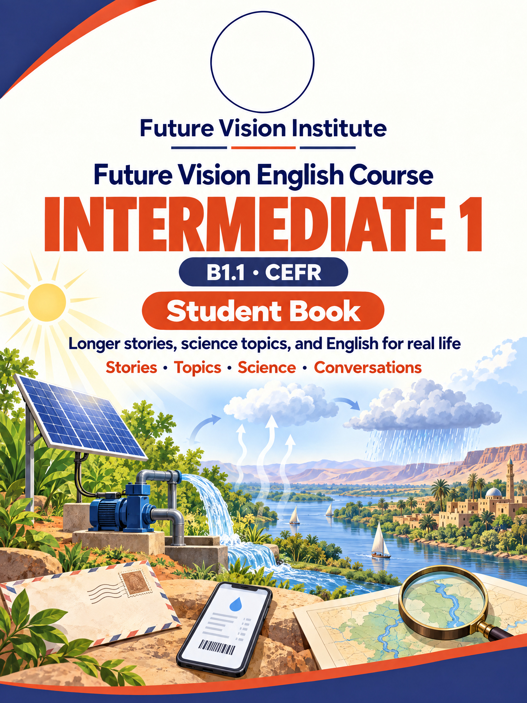

Omar has worked at the phone shop for six months. Read the story, then read it from Mr. Kamal's point of view.
Omar has worked at Mr. Kamal's phone repair shop for six months now. He started in March, so he has been there since the spring. In that time, he has fixed more than four hundred phones. He has learned a lot about screens, batteries, and cameras, and customers have started to ask for him by name.
He has also saved some money. Every month, he puts a little in a box. He has already saved enough for a new laptop, but he hasn't decided what to buy yet. "A laptop? A motorbike? Or a trip to Port Sudan to see my family?" he asks Adam. Adam laughs. "You have asked me that question ten times this week!"
One evening, Mr. Kamal calls Omar into his small office. Omar is nervous. "Have I done something wrong?" "No, Omar. You have done everything right. I've just opened a second shop near the university, and I need someone to run it. Have you ever thought about being a manager?"
Omar can't speak for a moment. "Me? A manager? But I'm only a student!" "You have been my best worker since your first day," Mr. Kamal says. "And you can still study in the mornings." That night, Omar calls his mother in Port Sudan. "Mom, I've just become a manager!" His mother is quiet for a second. Then she laughs. "And have you learned to cook fish yet?"
Omar has worked in my shop for six months. He started in March, and since then he has fixed more than four hundred phones. Customers have started to ask for him by name.
I know he has saved some money, because he talks about it all the time! But he hasn't decided what to buy yet.
Last month, I opened a second shop near the university, and I needed a manager. So yesterday, I called Omar into my office. He was nervous. "Have I done something wrong?" he asked.
"No," I said. "You have been my best worker since your first day. Will you run my new shop?" He couldn't speak for a moment. I think I've just made a very good decision.
We use them with the present perfect, for things that started in the past and continue now, and for recent news.
Sara has started engineering. What has she learned so far?
Three months ago, Sara started her first year at the Faculty of Engineering. University life is very different from school, and she has learned a lot already.
First, the timetable. At school, every day was the same. At university, Sara has lectures in the morning on some days and labs in the afternoon on others. She has already learned to plan her own week.
Second, the work. Her professors give a lot of reading, and they don't check homework every day. Students have to study alone. Sara has joined a study group with four classmates, and they meet in the library twice a week.
Third, people. Sara has made new friends from all over Sudan, from Kassala, El Obeid, and Port Sudan. Some of them have never lived in a big city before.
Has it been easy? Not always. She hasn't finished her first project yet, and her first exams are next month. But she is happy. "I've wanted to be an engineer since I was a child," she says. "Now I'm on my way."
Taking back something that doesn't work
They've stopped working.
I've only used them for three days.
Do you have the receipt?
— Yes, here it is.
Would you like a new pair, or your money back?
I'd like a refund, please.
Thanks for your help.
Adam shows his grandfather a video, and his grandfather tells him how life used to be. Read the story, then read it from Grandfather's point of view.
Last weekend, Adam visited his grandfather in the village. In the evening, they sat under the big tree, and Adam showed him a video on his phone. His grandfather smiled. "When I was your age, we didn't use to have phones. We didn't even use to have electricity!"
"So how did you study at night?" Adam asked. "We used to read by an oil lamp. My brothers and I used to sit around it after dinner and do our homework. And every morning, I used to walk five kilometers to school, without shoes."
"Five kilometers? Every day?" "Every day. And on the way, we used to stop at the river and swim. The teacher used to be very angry when we arrived wet!" Adam laughed. "Did you use to get in trouble?" "Oh, yes. All the time."
"What did you use to do for fun?" Adam asked. "We used to play football with a ball made of old cloth, and we used to listen to stories from the old men of the village. That was our TV." Adam put his phone in his pocket. "Grandfather, tell me one of those stories." His grandfather smiled and began.
When I was a boy, we didn't use to have phones or electricity. At night, my brothers and I used to sit around an oil lamp and do our homework.
Every morning, I used to walk five kilometers to school, without shoes. On the way, we used to stop at the river and swim, and the teacher used to be very angry when we arrived wet!
For fun, we used to play football with a ball of old cloth, and we used to listen to the old men's stories. That was our TV.
Now my grandson has a phone with a thousand videos. But last weekend, he put it in his pocket and asked me for a story. That made me very happy.
We use it for things that happened again and again in the past, or were true in the past, but are not true now.
How people used to send news, talk, and listen, before mobile phones.
Today, we can send a message to anyone in the world in one second. But how did people communicate before mobile phones?
Many people used to write letters. A letter from Khartoum to a village in the north used to take two or three weeks. Families used to wait for the post and read their letters again and again.
Some homes had a landline, a phone with a wire that stayed in one place. Calls to other cities used to be very expensive, so people used to talk quickly! In villages without phones, people used to go to the post office to make a call.
For news, people used to listen to the radio. In the evening, the whole family used to sit together and listen to the news, football matches, and songs.
Life was slower, but some people miss it. "We didn't use to look at screens all day," says Adam's grandfather. "We used to look at each other."
At the bank, opening an account for a salary
I'd like to open a bank account.
I used to keep my money at home.
Can I see your ID, please?
— Here you are.
I've just started a new job.
Can I use my phone to check my money?
— Yes, you can.
You'll get your bank card in a week.
Sara left her phone in a rickshaw. Read the story, then read it from the driver's point of view.
Last Thursday, Sara took a rickshaw from the university to the institute. When she arrived, she paid the driver and ran into class. Mr. Ali had already started the lesson. Sara sat down and opened her bag. Her phone wasn't there.
She looked everywhere. She had put it in her bag that morning, she was sure. Then she remembered. She had taken it out in the rickshaw to check the time, and she had left it on the seat! Her face went white. All her photos, her notes, and her university timetable were on that phone.
"Don't worry," Omar said. "Let's call it." He called Sara's number. Nobody answered. He called again. This time, a man answered. "Hello? I'm the rickshaw driver. I had already driven two kilometers when I saw the phone on the seat. I came back, but you had already gone inside!"
Ten minutes later, the driver was at the institute door with the phone. Sara thanked him again and again, and she tried to give him some money, but he said no. "My daughter is a student, too," he said. "I know how important a phone is." After he had left, Mr. Ali smiled. "Now, Sara. Had you done your homework before you lost your phone?"
Last Thursday, I drove a young woman from the university to the institute. She paid and ran inside, because her class had already started.
I had already driven two kilometers when I saw a phone on the back seat. She had left it there! I turned around and went back to the institute, but she had already gone inside.
Then the phone rang. A young man was calling. "This is Sara's phone," he said. "She is in class." So I took it to the door.
She thanked me again and again, and she tried to give me money. But I said no. My daughter is a student, too, and I know how important a phone is.
We use it for something that happened before another thing in the past. It shows which came first.
Calling customer service about a problem
Our internet isn't working.
It had worked perfectly until last night.
I had already restarted it twice.
The red light is flashing.
How long will it take?
— About two hours.
OK. Thanks for your help.
A gift with no name appears on Mr. Ali's desk. Read the story, then read it from the giver's point of view.
On Monday morning, Mr. Ali found a small box on his desk. It was in blue paper, and there was a card on top. The card said, "For the teacher who never gets angry. From someone who loves English." There was no name.
Mr. Ali opened the box. Inside, there was a beautiful pen that had his name on it. "Who left this?" he asked. Nobody answered. "OK," said Sara. "Let's be detectives. The person who left it is probably in this class."
The students looked for clues. Omar found the first one, a piece of blue paper which was on the floor near the window. "Who sits by the window?" he asked. Three students put up their hands. Then Adam looked at the card. The writing was green. "Who uses a green pen?"
Only one of the students who sat by the window used a green pen. It was Huda, a quiet girl who always helps the others. "Huda, is it you?" Huda went red. "Yes. Mr. Ali is the teacher who helped me most when my English was weak." Mr. Ali smiled. "This is the place where I have been happiest," he said. "And this is the class that I will never forget."
Mr. Ali is the teacher who helped me most when my English was weak. So last weekend, I bought a pen that had his name on it, and I wrapped it in blue paper.
On Monday, I came early and put the box on his desk. On the card, I wrote, "For the teacher who never gets angry." I used my green pen, which was a big mistake!
The students became detectives. Omar found a piece of the paper which had fallen near my seat by the window. Then Adam saw the green writing. Everybody looked at the girl who sits by the window and uses a green pen.
I went red. But Mr. Ali smiled. "This is the class that I will never forget," he said.
We use them to join two ideas, and to say which person, thing, or place we mean.
How solar panels turn sunlight into electricity, and why they are good for Sudan.
Sudan is one of the sunniest countries in the world. In many places, the sun shines for more than ten hours a day. That is a lot of free energy, and more and more people are using it with solar panels.
A solar panel is a flat board which is covered with special cells. These cells are made of a material called silicon, which comes from sand. When sunlight hits the cells, it moves tiny parts inside them, and this movement makes electricity.
The electricity can be used at once, or it can be kept in a battery for the night. People who live far from the cities, where there are no power lines, can now have lights, fans, and even TVs.
Solar power has other good points. It is clean, because it doesn't make smoke. It is quiet, unlike the generators that many families use during power cuts. And after you have bought the panels, the sunlight is free.
There are some problems, too. Solar panels are still expensive for many families, and they need cleaning when dust covers them. But scientists who study energy say that one day, the sun will be Sudan's most important source of power.
The sunlight that falls on the Earth in one hour has about as much energy as all the people in the world use in a whole year.
Giving opinions, agreeing, and disagreeing politely
What do you think?
In my opinion, it's a great idea.
I agree. · Exactly.
I see your point, but…
That's true, but…
OK, you've changed my mind.
Every morning, mangoes disappear from the institute's tree. Read the story, then read Mr. Ali's version, which says who did each thing.
In the garden of Future Vision Institute, there is an old mango tree. Every year, hundreds of mangoes are grown on it, and they are shared by everyone, students, teachers, and the cleaners.
But this year, something strange happened. Every morning, mangoes were taken from the tree. On Sunday, ten mangoes were taken. On Monday, fifteen. By Wednesday, the lowest branches were empty. "Someone is taking our mangoes!" said Mr. Ali. Adam looked at Omar, and Omar looked at Adam. "Don't look at me!" they both said.
A meeting was held in the office. A camera was placed near the tree, and the gate was locked every evening. But the next morning, ten more mangoes were taken, and the gate was still locked!
On Thursday, the video was checked. Everybody watched the screen. At two in the morning, small dark shapes flew into the tree. They were fruit bats! "So the mangoes weren't stolen by people," Omar laughed. "They were eaten by bats!" Now a net is put over the tree every night, and the mangoes are shared by everyone again, but not by the bats.
Every year, our old mango tree grows hundreds of mangoes, and everyone shares them.
But this year, someone took mangoes every morning. By Wednesday, the lowest branches were empty.
We held a meeting in the office. Omar placed a camera near the tree, and the guard locked the gate every evening. But the next morning, more mangoes were gone!
On Thursday, we checked the video. Fruit bats ate our mangoes! Now the guard puts a net over the tree every night, and everyone shares the mangoes again.
We use it when the action is more important than the person who does it, or when we don't know who does it.
Where does rain come from? Follow the journey of water from the sea to the sky and back.
Have you ever wondered where rain comes from? The answer is the water cycle, the journey that water makes again and again between the sea, the sky, and the land.
First comes evaporation. Every day, water in seas, rivers, and lakes is heated by the sun. When it gets warm, it turns into a gas called water vapor, which rises into the air.
Next comes condensation. High in the sky, the air is much colder. The water vapor is cooled, and it changes back into very small drops of water. Millions of these drops are joined together, and clouds are formed.
Then comes precipitation. When the drops become too big and heavy, they fall to the ground as rain. In very cold places, the water falls as snow.
Last comes collection. The rainwater is collected in rivers, lakes, and under the ground. Some of it is used by plants, animals, and people. The rest flows back to the sea, and the cycle starts again.
In Sudan, most rain falls between July and September. A lot of this water is carried by the Blue Nile from the mountains of Ethiopia, and it is used by farmers all along the river.
The water in your glass may be millions of years old. It has been through the water cycle many, many times!